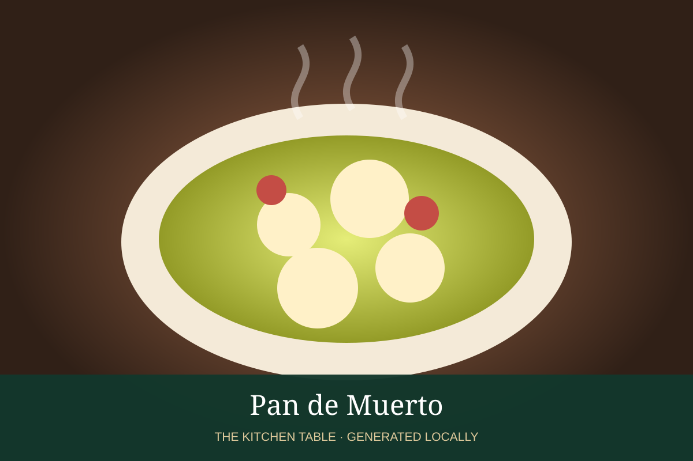

MEXICAN · DESSERTS & DRINKS
Pan de Muerto
Orange-scented Day of the Dead bread with buttery bone-shaped decoration.

Ingredients
- 4 cups flour
- 2 1/4 tsp yeast
- 3/4 cup warm milk
- 1/2 cup sugar
- 3 eggs
- 8 tbsp butter
- Zest of 1 orange
- 1 tsp orange blossom water
- Sugar for finishing
Method
- Knead all ingredients except finishing sugar into a supple dough; rise until doubled.
- Shape rounds, reserving dough for crossed bone decorations.
- Proof again and bake at 350°F until golden.
- Brush warm loaves with melted butter and coat with sugar.